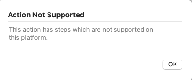

Hi guys, do any of you happen to have any tips or tricks for integrating Drafts 5 with Scrivener? I would love to be able to export text from Drafts into Scrivener as part of my workflow for a book I am trying to write. I think I used to be able to do this with the older Drafts - would love to do it with the new version. Thanks!
1 Like
Scrivener has zero scripting ability, a decade after the developer first suggested he might add AppleScript support https://www.literatureandlatte.com/web/forum/viewtopic.php?t=34852
There are x-scrivener-item:// urls but they only work on the Mac.
It seems that Drafts 4 allowed sending to Scrivener via an Open In… action which doesn’t exist in Drafts 5.
If you have Workflow (app) installed, a workaround for open in could be to call a Workflow workflow from a Drafts whose only action is to open in with the app set as Scrivener.
1 Like
Yes, that works. I had just given up trying to get something in Workflow but I was using the share actions in Workflow not Open In… (didn’t actually realise it existed…).
1 Like
I made a simple workflow in Workflow, and it did exactly what I needed. Thank you all!
Note that 1) you’ll have to have a project open in Scrivener before sharing and 2) that the text will end up in whichever project is open.
1 Like
This is an of post. This open in action is redundant, is it? Any updates on integrations between drafts and scrivener?
Is this a typo? should if be “This is an old post”? - if so, I agree.
Drafts still supports it and it still works, so I would say, no, it is not redundant.
This discussion was a little later and covers an option around the scratch pad.
Scrivener is a local, file-based app, so does not have a Web API.
While Drafts can now write almost anywhere thanks to bookmarks, Scrivener uses a package structure for its files, so while you can get into the Scrivener file file and see the files that you have added to your Scrivener project, you wouldn’t have an easy (or advisable) way to let Scrivener know where you want the content including in your project.
{kind=link}
Scrivener is a specialist app, and is not really built for in-depth file manipulation and automation. It’s file structure is a package file, it has no Shortcuts support, and I assume no AppleScript support (certainly the older version I have for Mac does not). As a result the choices for integration would remain limited until Scrivener unlocks the door on automation. If it happens at all, I suspect this will be through Shortcuts integration; but I wouldn’t hold my breath on that happening, after all, Scrivener’s focus is on authoring.
Yes, that is a TYPO, sorry
I am getting this message on the Mac

Yes. The docs note it is iOS only. Apple doesn’t have “open in” on the Mac. I think it was a bit of a workaround when Apple added it to IOS.
{kind=link}
Thanks, Scrivener on IOS isn’t that great, so that’s that.
Could you elaborate a bit? I was wondering why you would want to export to Scrivener from Drafts, rather than writing directly into Scrivener, or just polishing things up in Drafts and then copying a block of text and then pasting it into Scrivener. I am asking because, for me at least, Drafts and Scrivener are quite different tools. I am curious about your writing workflow.
Scrivener on iOS isn’t that great. Drafts for me is like a ‘rough book’. So, the fact that I can write on any device at any time and then expand on the idea tends to work for me. You’re right about Scrivener being a totally different tool, but you never know when you’ve got something insightful which I can relate someplace else, hence the question
Right. “Text starts in Drafts” is a reasonable mantra, especially if much of it might start with dictation in the Watch.
As to “block copy into Scrivener”, I do this but into Sublime Text when preparing to post a blog entry I’ve written in Drafts. However, one might prefer more structure / function than a naive copy of a block of text.
“Scrivener on iOS isn’t that great” is a polite understatement. But it is nice to be able to open Scrivener docs to check things. Scrivener really needs a big screen to do its magic. Drafts seems much more suited to a small screen. I agree that “text starts in Drafts” totally makes sense. Drafts on the Apple Watch works quite well. I find I am not great at using the teensy keyboard, but speaking into the App is fine.